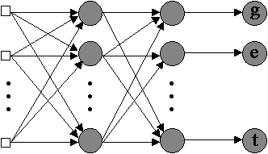
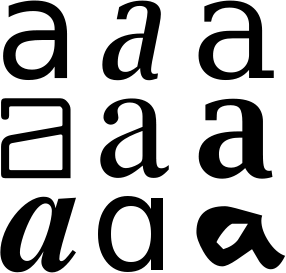

In the field of OCR, as in other fields of computer science, huge progress was made since the old days of E13B, the magnetic typeface developed for MICR, and OCR-A and OCR-B, the two first optically readable fonts. The first commercial products on the PC platform came out towards the end of the 80s. These were the first “omnifont” systems that could read (virtually) any typeface — without user training. (It’s estimated there about 60,000 different fonts nowadays!)
OCR in the 80s was dominated by rule-based systems that executed topological analyis. With feature extraction, the bitmap of each symbol was broken up into a set of characteristics — lines, curves, loops etc. Rules were then applied to determine which character was the closest match, given the set of extracted features. One simple rule could be: if a character is entirely round but has a hole on the right side, it must be a “c”.
This method was largely independent of the character size — which earlier systems were not — and worked well on clean, crisp images. However, the OCR accuracy could be disastrous when “noisy” scans and degraded characters were submitted to the recognition.
The really intelligent solutions that followed were based on an artificial neural network, a key concept in Artificial Intelligence (“A.I.”).
Should you be wondering where the term “neural network” came from: the knowledge of a neural network is stored in connecting neurons. We’ll try and clarify that for you presently. The word “artificial” indicates that we’re not dealing with a biological neural network such as your brain. (Mind you, the human brain is infinitely more complex than any artificial neural network ever gets: a human brain contains 100 billion nerve cells or “neurons” and each neuron — wired up in three dimensions — is connected to on average about 1,000 other nerve cells...)
A computer chip — hardware — made of silicium functions in a totally different way than the human brain — “wetware”. Compared to computer chips, neurons are very slow but billions of them are at work simultaneously! Ignoring the issue of multi-core processors, a single chip does all the work (and indeed very fast) in most computers. Information in the human brain is not stored in neat cells that store one bit (1 or 0) but are spread across the network of connected brain cells. The strength of the synapses can vary, and it is the pattern of strong and weak connections that stores the information. A single memory can be stored by many synapses, and each synapse contributes to many memories…
Computers can easily imitate what a single neuron and a single synapse does. According to A.I. specialist Ray Kurzweil, a chip only has to execute about 200 calculations to imitate a nerve cell, and a synapse corresponds to 10 bits. Multiply these figures by the number of neurons and the (much larger) number of synapses: it takes about 20 quadrillion (20,000,000,000,000,000) calculations per second and a memory capacity of 100 TB. (A terabyte is 1,000 GB.)
Such calculations are in all probability exaggerated because they assume that each neuron constantly works at full speed. Robot expert Hans Moravec of the Carnegie Mellon University has compared a piece of the brain that we understand relatively well — the furthest layers of the retina, which start processing the images that our eyes register — with computers that perform the same task. It turns out that 0.2 grams of nerve tissue performs the same task as a computer that executes one billion calculations per second. Extrapolate those figures and you end up with 0.1 quadrillion (100,000,000,000,000) calculations per second.
Kurzweil estimates that the “knowledge” of a human expert takes about 10 GB. If that professional experience represents 1% of the overall memory of a human expert, a human memory stores 1 TB.
Any conclusions? As far as memory is concerned, computers do reasonably well. Buy a good external hard disk and you’ve holding up to 5 TB of disk space in your hands these days! Computers do less well when it comes to calculation power: most computers execute 1 or several billion calucations per second. Only the fastest “supercomputers” can start competing with human beings — based on the lowest estimations of the human brain, that is…
Remembering Moore’s law, you may be inclined to think that computers will surpass human beings as their power increases in the coming years. Not really, all that is just the “raw” processing power. CPU power does not mean that computers can think or operate as the human brain does. The fact remains that nobody knows how you program a computer to think like the human brain…
We’ll limit ourselves to a general idea of how neural networks operate. Convential algorithms compute 1s and 0s, for instance when you do numbercrunching with a spreadsheet. Computers execute a set of instructions very fast — much faster than human beings and without getting bored by the repetition — but they do blindly and exclusively what the programmer programmed them to do. The machine must be told in advance, and in great detail, the exact series of steps required to compute a specific problem. And it fails miserably when an unexpected situation presents itself. (Incidentally, that’s one of the reasons software crashes from time to time.) The results are always totally predictable; if anything goes wrong, a software or hardware fault is involved. The input must be just as precise: “noisy” data confuses the machine. You can’t get a spreadsheet to calculate the sum of a number and a word. Nor can you enter a text in a database field that only accepts serial numbers with a specific syntax.
Unfortunately, many problems can’t be formalized completely, they can only be solved through generalization and parallelism: how can we for instance read somebody’s handwriting when we’ve never seen it before? How to recognize somebody’s voice when we’ve only heard that voice once over a cell phone as we drove through a noisy tunnel in an open car — not to mention the fact that this person may have a Southern drawl or Bronx accent…
The conventional algorithms — called “Von Neumann machines” by A.I. researchers — are limited to solving problems that we already understand and know how to solve. They deal with straightforward logic. But they are no good when no hard, fixed rules apply: Von Neumann architectures can’t interact with noisy data, can’t adapt to the circumstances and will not detect parallelism between similar cases. Computers may keep ledgers, track inventories, process data and perform complex math admirably, but they have trouble recognizing even basic patterns. Simple animal brains on the other hand are capable of such low-level functions as are currently impossible for computers!
Artificial neural networks — you can call them “connectionist machines” — offer a less technical way to develop machine solutions. They are particularly effective when a large database of prior examples is available. Although the exact nature of the relationship between input and output may be unclear, they will nevertheless produce very close approximations (“best fits”) of the correct answer — for instance by establishing accurate predictions based on historic examples where human beings have not been capable to discover the underlying laws or factors. Without a neural network, how could a computer analyze material governed by an unformulated — intuitive? — set of rules? (The contrary holds too: no point in using a neural network to solve traditional computing problems!)
Neural networks excel at recognizing patterns, learning from experience, organizing and clustering data and sorting relevant from irrelevant information. They will even find patterns in data no one knows are there! Small wonder they’re for example used in “data mining” — the extraction of knowledge, understanding from data, raw material. (OCR is a “classification problem” too, of course: you have to determine which shapes belong to the group of “a” symbols, which belong to the group of “b” symbols etc.)
These characteristics explain why they’re used prominently in pattern recognition — not just OCR but also medical imaging, voice recognition, expert systems etc. (Ironically, neural networks are being used to model brain disorders to recommend the best therapy: this is the artificial neural network helping out the biological neural network!) The success of artificial neural networks in character recognition is easily explained: until recently, they systematically outperformed other recognition approaches. After all, neural networks acquire knowledge through learning!
Neural networks overcome the computer’s (in)famous lack of flexibility by loosely imitating the general “architecture” of the human brain: they solve problems by creating connections between processing elements — in an animal or human brain, those would be the “neurons”.

Mimicking its biological counterpart, each processing element — the technical term is “node” — has one or more inputs and produces an output. Neurons combine signals to produce new ones. Each input entering the neuron has a “weight” attached to it that modifies the value entering the neuron. The weight determines the strength of a specific connection: it tells you how strong the impact of a specific input is. The connections determine which element influences which other units. The output from one node becomes the input for another node until the final output is reached.

That’s indeed how the brain works: neurons collect signals from other neurons through the “dendrites” and in their turn “fire” other neurons, relaying information by transmitting chemical-electrical impulses through the “axons”.
The processing is distributed and parallel: a cell depends only on its input, not on any other, unconnected cells. The various cells process their input independently and simultaneously. Von Neumann machines on the other hand are sequential processors that execute the next step when the previous step was completed.
The artificial neutral network learns through generalization when examples with known results are submitted to it, just like children learn to recognize dogs by seeing actual examples of dogs. The weights of each factor are adjusted — automatically or through human intervention — to bring the final output closer to the known result. Similarly, when brain cell A repeatedly or consistently fires brain cell B, a metabolic change takes place in the cells so that cell A becomes more efficient in stimulating cell B: the signals from some neurons are chemically inhibited while the signals from other neurons excite the cell with neurotransmittors.
Learning in animal and human creatures by necessity involves adjustments in the connections between the neurons: babies dispose of their 100 billion neurons at birth, but the connections between them grow as they learn and grow up. An individual nerve cell can collect information from other cells via up to 100,000 dendrites! (And you now begin to understand why each biological neural network is unique — why we all have a unique personality!) Mind you, we’re not suggesting that the brain of a full-grown adult doesn’t evolve anymore. Any skill a human person develops — somebody learns how to play the piano, a tennis player’s backhand improves, a factory worker learns how to handle a machine or tool, a person follows a course to develop or improve his memory, a disabled person learns how to walk again after a major accident and even people that seek psychological help to control their anger or fight their addiction to nicotine or alcohol — will develop millions of new connections between brain cells.
(Maybe a warning should be given here: however tempting the analogies with the neurological world, artificial neural networks are not an attempt to understand how the animal and human brain works. Nor are they a scientific endeavor to reproduce the behavior of a biological neural network. Even the most sophisticated designs use crude, impoverished models of how neurons actually function; a lot more detail is required to explore the brain’s operation scientifically! Artificial neural networks do not concern themselves with biological realism, they are simply a set of problem-solving computing tools with unique advantages.)
Let’s apply these general concepts to the OCR field. To show you how desparately generalization is needed in text recognition, we’ll design a hypothetical OCR system that handles 256 by 256 greyscale images.
Given an image matrix of 256 x 256 pixels and a bit depth of 8 bits (256 grey levels), some simple mathematics lead to this conclusion: our hypothetical system could (theoretically) be confronted with 16.7 million different images… And that’s a lot of zeros for a single figure! Obviously, many possible bitmaps will never occur because they wouldn’t represent a character anyway — or will they? Don’t forget that spurious pixels — a developer of artificial neural networks would speak of “random noise” — can blur a crisp character shape at all times!
Many different samples of a certain symbol — for instance an uppercase “A” — and their correct output get fed into the neural network that progressively develops a general idea of what a certain character basically looks like. The “structure ” is derived from existing data. (We’ve sorted the varying “A” characters by size, but their size is not the issue: the fact that each “A” shape looks different is!)

(We just spoke of varying characters, but actually we should speak of “glyphs”, not characters. “Glyph” is the technical term that describes the shape and style of a single character. For example, a letter “a” and its italic and bold version are different glyphs of the same character. Glyphs refer to the actual shape, the “bit pattern” of a character (called “outline” in technical language). In other words, any two images which differ in shape constitute different glyphs. “Glyph” is a synonym for “character image”. OCR is the technology that can correctly identify glyphs that show infinite variations in shape.)

Mind you, this “training” of the neural network gets done by the engineers that develop it, not by the user of the OCR software. Don’t confuse the “off-line training” used by the developers to create a powerful neural network with the “interactive learning” or “font training” you perform as a user on specific documents! (More about that later.) The neural network at the heart of your OCR software is pretrained when you receive it on a CD-ROM or DVD or when you download it; that’s why it’s capable of reading your documents in the first place…
Let’s give a very basic example. We want to develop a primitive neural OCR system that recognizes the handwritten lowercase letters “a” and “d”. Those are similar characters, but the vertical stroke distinguishes them: a long vertical stroke gives you a “d”, a short vertical stroke characterizes the “a” symbol.
We submit an adequate sample of input-output pairs — samples of handwritten “a’s” and “d’s” with the correct recognition result — into the neural network. Thanks to its capacity for self-organization will the neural network “detect” spontaneously that, for instance, the height-width ratio of the characters allows to distinguish them: the “d” symbol is significantly higher than the “a” symbol! The statistical regularity of the heigh-width ratio — low for “a” symbols, high or “d” symbols — allows the neural network to extract this distinctive, salient feature from the stimulation samples; detecting this feature allows the network to behave in a seemingly “intelligent” way. It is through such internal representations that a connectionist machine “encodes” the outside world.
Thanks to that training, the software develops an “abstract” definition of a character: the letter “O” has a circular shape, the letter “C” is a semi-circle with an opening on the right side etc. These general characteristics or features apply to any font printed at any size.
In a way, advanced OCR software analyzes the segmented characters as human beings unconsiously do: a number of features — strokes, loops, holes, nodes, angles etc. — are extracted and checked against a predefined source of knowledge. (More about the anatomy of letters later...)
Learning a single feature from the training samples suffices to discriminate two characters; real OCR systems are of course infinitely more complex than that: the number of nodes quickly runs into the thousands… Which actually shows another advantage of connectionist machines: neural networks cope well with this degree of complexity! Von Neumann machines quickly suffer from the “curse of dimensionality”: when too many variables are involved, it becomes too difficult to model the complex functions accurately. The number of computational steps in a neural network is much less than what would be required if you were to solve the problem by programming “if” statements — if it could be done at all with traditional computing.
We emphasize that the neural network does not use a formal “idea” — check the height of the character! — to recognize the symbols; it just detects a statistical correlation between the height of an input pattern and its allocation to the class of “a” or “d” symbols. There is no simple correspondence between the neurons and a “concept”. The information contained in the neural network is distributed across a set of weights, it can’t be pinpointed in a fixed set of instructions. Any intelligence used by the neural network is spread across the network as a whole, and any given node can partake in one or more semantic representations.
Summing up, neural networks are sophisticated, flexible and self-organizing algorithms that learn as they get trained on examples — an aspect that makes them very appealing to engineers that design OCR systems.
The simple fact is that OCR software has to cope with all kinds of fonts — including typefaces that were not used during the pretraining — and real-life documents — and that includes degraded faxes, bad scans, messy photocopies, not to mention purely accidental noise such as coffee stains, staple holes, handwritten notations, torn edges, ring binder holes and indiscriminate speckles. Any OCR system handles new, unseen stimulation patterns on a daily basis.
Indeed, the representational power of a neural network really comes to life to when input patterns are submitted to it that don’t have a known output yet. (Again, a Von Neumann machine can’t cope with data it doesn’t expect: the software will produce incoherent results or crash altogether...) The neural network analyzes any similarities (by matching the unknown pattern with known ones) and generates the output you’d get for the “best fit”, the closest similar input pattern. “Noise”, small changes in the input signal, does not drastically affect a neuron’s output.
The neural network recognizes the individual symbols. It outputs one result or presents various alternatives for a specific font shape. A confidence level is assigned to each solution, it indicates how sure the neural network is about those results. (Von Neumann machines always produce unique results with no ssalternatives.)
Where does this technology come from? — Reaping the benefits of the neural revolution — … Or do word recognition — Each expert casts his vote — Autolearning font shapes — Putting more feet on the street — … With a document revolution thrown in
Home page — Intro — Scanners — Images — History — OCR — Languages — Accuracy — Output — BCR — Pen scanners — Sitemap — Search — Contact – Feedback